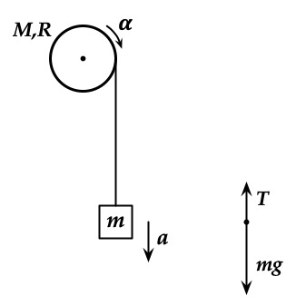
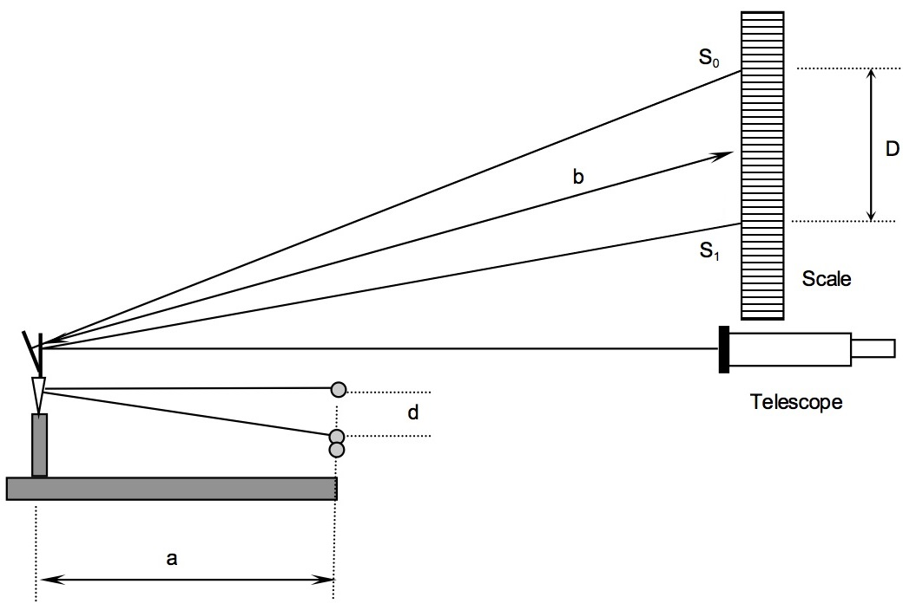
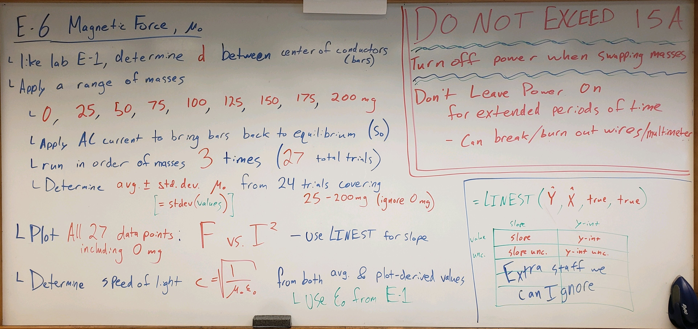
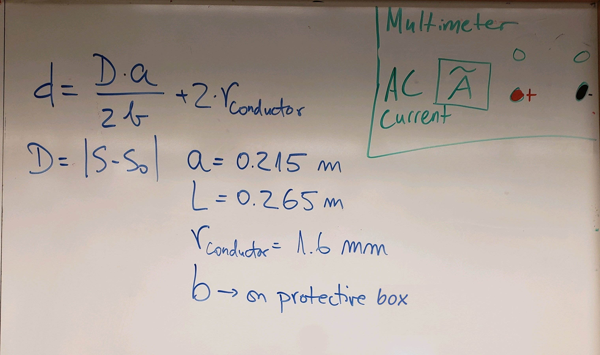
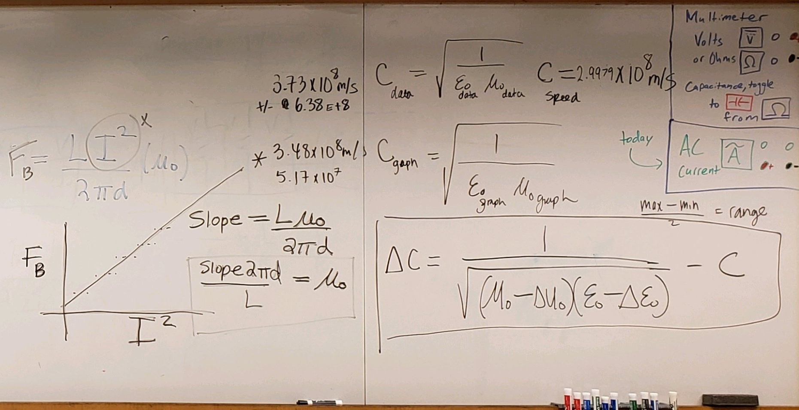

Magnetic Force & the Determination of \(\mu_0\)#
Background#
Danger
⚠️ ⚠️ ⚠️ ⚠️ WARNING ⚠️ ⚠️ ⚠️ ⚠️
⚠️ ⚠️ ⚠️ ⚠️ HIGH CURRENT IN USE TODAY ⚠️ ⚠️ ⚠️ ⚠️
⚠️ ⚠️ ⚠️ ⚠️ DO NOT TOUCH THE METAL CONDUCTORS (BARS) or WIRE PLUGS ⚠️ ⚠️ ⚠️
⚠️ ⚠️ ⚠️ ⚠️ YOU CAN BE SERIOUSLY INJURED ⚠️ ⚠️ ⚠️ ⚠️
⚠️ ⚠️ ⚠️ ⚠️ WARNING ⚠️ ⚠️ ⚠️ ⚠️
● Background Overview#
OVERALL GOALS
Use a set of parallel bars to generate magnetic fields to:
Investigate the relationship between magnetic force \(F_B\) and current \(I\) (i.e. \(F_B\) vs. \(I\)).
Experimentally determine the permeability of free space \(\mu_0\)
Along with your previous plotting-derived measurements of \(\varepsilon_0\), determine the speed of light \(c\)
By measuring the magnetic force between two parallel current-carrying conductors, the permeability of free space, \(\mu_0\), will be experimentally determined. \(\mu_0\) is a fundamental constant of nature, and, with its electric equivalent \(\varepsilon_0\) that we determined in an earlier experiment, we will now be able to determine the magnitude of the velocity of propagation of an electromagnetic wave — the speed of light. These constants are related to the speed of light, c, by the following relation, derived from Maxwell’s equations which describe the behavior of electric and magnetic fields:
You will measure \(\mu_0\) here, and, with your previous measurement of \(\varepsilon_0\), determine the speed of light \(c\).
The 2019 redefinition of SI units defined exact values of fundamental constants including the electron charge \(e\), the speed of light \(c\), and Planck’s constant \(h\). The second is defined in terms of the frequency of a Cesium atomic clock. As a result, the value of \(\mu_0\), the magnetic constant, must now be experimentally determined.
Note: Until 2019, \(\mu_0\) was defined to be exactly \(4\pi \times 10^{-7}\) T⋅m/A. This 2019 value is so close to the current best measurement, that you can use \(\mu_0=4\pi \times 10^{-7}\) T⋅m/A as the accepted value.
The magnetic field strength \(B\) a distance \(r\) from the center of a very long, straight conductor carrying a current \(I\) is given by:
A conductor of length \(L\) [m] carrying a current \(I\) [A] in a magnetic field of strength \(B\) [T] experiences a force \(F_B\) [N], given by:
where \(\theta\) is the angle between the vectors \(\vec{B}\) and \(\vec{L}\). If the magnetic field is produced by the current in a second conductor, the currents in the two conductors exert equal magnitude and opposite forces on each other.
For the case of two long, parallel conductors, each carrying the same current \(I\) and separated, center-to-center, by the distance \(d_\text{center-to-center}\), the force between the two conductors is the force on one in the magnetic field of the second. Thus if (134) is used in (135), we obtain for the force:
By measuring the force between two such conductors, the value of \(\mu_0\) can be determined. By considering the parameters of the apparatus to be used, it can be seen that the magnitude of the force between the two conductors is quite small and will require some care to accurately measure. If \(L\) is about 30 cm, \(I\) about 10 A, and \(d_\text{center-to-center}\) about 2 mm, the force would be in the range of \(10^{-4}\) N, or the weight of a few milligrams of mass. Since this force is well below the weight of a reasonable conductor to be used for the experiment, a counter weighted balance system will be used to provide the mechanical support for the movable conductor. This is essentially the same apparatus as Electric Force & ε₀ Lab. The movable conductor can then be loaded by a known mass whose weight can then be matched by the small magnetic force. The apparatus is schematically illustrated from a top-down perspective in Fig. 116.
{kind=link}

Fig. 116 Apparatus dimensions from a top-down perspective, similar to the apparatus setup from Electric Force & the Determination of ε₀.#
As before, similar to the setup and measurement methods from the Electric Force & ε₀ Lab, an optical lever, telescope and scale are used to observe the deflection of the balance, which carries the movable, upper conductor. The magnitude of the magnetic force can be measured when the magnetic force has restored the loaded system to its original position. In this case we make the same magnitude current flow in opposite directions in the two conductors so the force between the two conductors is repulsive. Thus on the upper conductor, there is a gravitational force down (the weight of the applied mass) and a magnetic force upward which we will adjust by controlling the current equal to the gravitational force. More conveniently than the electric force version of the balance beam, this equilibrium is stable!
With the required balancing current determined along with the other dimensions of the apparatus, we can now determine the value of \(\mu_0\).
● Equipment#
Category |
Items |
|---|---|
Optical Measurement |
• Telescope with crosshair |
Power Supply |
• AC power from wall outlet controlled by large cylindrical transformer/potentiometer (0–100% of wall power, ~0–20 A) Dial markings are not accurate; ignore scale on knob |
Current Measurement |
• Fluke multimeter used as AC ammeter (\(\tilde{\text{A}}\), ), connected in series with circuit |
Masses & Tools |
• Small masses (5, 20, 50, 100, 200 mg) |
Parallel-Conductor Apparatus |
• Bottom conductor fixed in place |
Electrical Connections |
• 4× banana plug wires (12 AWG) |
Additional Equipment |
• Protective box with mirror-to-scale distance written on it |
● Adjustment of apparatus#
The apparatus has been carefully adjusted before your lab and should not require further significant adjustments. This section describes how the apparatus was prepared. If something seems to need adjusting, see the lab instructor. The apparatus is very similar to the apparatus setup from Electric Force & ε₀ Lab.
The beam lift provides a definite location for the beam and thus guarantees continued alignment of the parallel conductors. Use the beam lift each time you change weights or relocate the counterweight.
The fixed conductor can be adjusted vertically, the movable conductor horizontally, so that the conductors are parallel. If the conductors are NOT parallel with no mass in place, seek the instructor’s help.
The counterweight behind the mirror can be used to change the equilibrium separation of the conductors.
Level the apparatus with the adjusting screws so that it sits securely on the table.
Mirror-to-scale distance was measured from rear of mirror (reflective surface) to roughly the middle of \(S_1\) and \(S_0\) on the scale (ruler).
Demo Video: Setup & Procedure#
Some clarifications, additions, or corrections since this video is slightly outdated:
Wires are thicker and safer now, still don’t touch, don’t exceed 20 A
White board slightly outdated as there have been slight changes
Masses in decreasing order, rather than increasing order
Using average and uncertainty (not standard deviation)
Speed of light just from plotting-derived (i.e. from
LINEST) values from first lab (\(\varepsilon_0\)) and today’s lab (\(\mu_0\))
If embedding is broken, follow: https://www.youtube.com/watch?v=EpYTWOcaFSU
Experimental Procedure#
● PRECAUTIONS#
The wire frame that supports the current carrying conductor and counterweight is supported on knife edges. The frame is easily bent, and the knife edges can be easily damaged. Treat the system with the same care as a precise analytical balance. Handle the weights with tweezers and store them in the case.
The current must pass through the knife edges and intense local heating is produced. Reduce the current to zero as soon as possible after making the observations.
Danger
DO NOT TOUCH THE METAL CONDUCTORS (BARS) or WIRE PLUGS
The current should not exceed 20 A!
● Preview#
PROCEDURE OVERVIEW
Investigate the relationship between magnetic force and current using the magnetic field induced by high current in parallel, cylindrical conductors.
Determine permeability of free space \(\mu_0\)
Determine speed of light \(c\)
Perform three rounds of nine trials each (27 trials total). In each round, sequentially apply less mass (below). Repeat this sequence three times (rather than completing all trials for a single mass) so that any alignment issues or experimental errors can be detected and corrected early without repeating the entire experiment.
First determine the conductor separation distance, \(d_\text{center-to-center}\). Then add mass and adjust the current \(I\) until the conductors return to parallel, restoring the separation to \(d_\text{center-to-center}\) (or telescope crosshair to \(S_0\)). Under this condition, the magnetic force balances the additional gravitational force from the applied mass.
For each trial, determine \(\mu_0 \pm \delta \mu_0\).
Obtain an overall value by both:
averaging the results from all trials
plotting magnetic force vs. \(I^2\)
include additional magnetic force vs. \(I\) plot for comparisons
Compare these results with the accepted value \(\mu_{0\text{,accepted}}\)
Determine speed of light \(c\) by using your plotting-derived value of \(\mu_0 \pm \delta \mu_0\), and previous plotting-derived values of \(\overline{\varepsilon_0} \pm \sigma \varepsilon_0\)
● Preliminary Setup#
If \(b\) is the mirror-to-scale distance and \(a\) is the length of the frame (see Fig. 116), then a straightforward geometrical analysis (like in Electric Force & ε₀ Lab) will show that the vertical displacement of the conductor, \(y\), is given by:
where \(D\) is the change in scale reading from the equilibrium value and the value when the two conductors are in contact (the contact reading is determined by adding a mass to the pan which depresses the beam until contact occurs). The factor of 2 results from the fact that the optical path reflected off of the mirror to the scale rotates through an angle twice that of the beam holding the movable conductor.
However, the change in scale reading doesn’t account for the conductors’ thickness. Since the B-field generated by current flowing in the cylindrical conductors is organized about their center, we must add in two radii to get the center-center separation between the two conductors. This gives us:
where \(r_\text{conductor}\) is the radius of the conductor (multiplied by two to deal with the fact that we’re dealing with two conductors).
Investigate the use of the telescope and scale so that the rotation of the frame can be measured in terms of scale divisions (see Fig. 117).
{kind=link}

Fig. 117 Schematic of the measuring apparatus, similar to the setup and measurement methods from Electric Force & ε₀ Lab.#
Do not turn on the power supply until requested in the procedure later in ● Experimental Data Collection.
Create a common data table with:
\(a\): length of frame, \(0.215\,\text{m}\)
\(b\): mirror-to-scale distance (on top of protective box)
\(L\): wire/bar length \(0.265\,\text{m}\)
\(r_\text{conductor}\): wire radius \(1.6\,\text{mm}\)
\(S_0\): equilibrium crosshair position
\(S_1\): bars touching crosshair position
\(D\): ruler (a.k.a. scale) distance between \(S_0\) and \(S_1\)
\(d_\text{center-to-center}\): length of frame
\(g\): acceleration due to gravity for Fairfield, CT, \(9.803\,\text{m/s}^2\)
\(\mu_{0\text{,accepted}}\): accepted value of the permeability of free space, \(4\pi \times 10^{-7}\,\text{T⋅m/A or N/}\,\text{A}^2\)
\(c_{\text{accepted}}\): accepted value of the speed of light, \(2.9979\times10^8\,\text{m/s}\)
Also add in the plotting-derived (i.e. from
LINEST) \(\varepsilon_0\) from the first lab for each member of your lab groupOf your group members’ values, take the average (\(\overline \varepsilon_0\)), and use the standard deviation (\(\sigma \varepsilon_0\)) of your groups’ values as the uncertainty for later speed of light use.
If you are completing the lab individually, use your single plotting-derived \(\varepsilon_0\) and its associated uncertainty \(\delta \varepsilon_0\)
In order to measure the equilibrium separation distance, \(d_\text{center-to-center}\), of the conductors, two readings are made.
The first is the scale reading, \(S_0\), at the equilibrium position, i.e. when no mass has been applied to the pan on the movable conductor.
The second scale reading, \(S_1\), is made when the top conductor contacts the lower conductor (Fig. 117). Place a sufficient mass in the pan on the top conductor to make it contact the lower, stationary conductor. Record \(S_1\).
⚠️ POWER MUST BE OFF FOR THIS STEP ⚠️
You will periodically verify that \(S_0\) and \(S_1\) are not changed throughout the experiment.
Determine \(D = | S_1 - S_0 |\) from two scale readings (reminders: absolute value there is to represent the total distance between \(S_0\) and \(S_1\). If your crosshair crosses 0, make sure to consider the negative).
Calculate and record the conductor separation distance, \(d_\text{center-to-center}\). Refer to Fig. 116, Fig. 117, (138).
Prepare a data table with columns for the variables below. You’ll have rows for each trial as well as for averages. Reminder, you will conduct 27 trials total by conducting three rounds of sequentially changing the applied masses:
Trial number
Lab member’s initials (person looking through telescope)
\(m_{\text{applied}}\): Applied mass
\(F_B\): Applied magnetic force What does this equal?
\(I_\text{min}\): Minimum current \(I\) required to return to the equilibrium position
\(I_\text{max}\): Maximum current \(I\) required to return to the equilibrium position
\(I\): Current \(I\) required to return to the equilibrium position
\(\delta I\): Estimated current uncertainty (to be assumed as majority source of uncertainty for today)
\(I^2\): Current squared
\(\delta I^2\): Current squared
\(\mu_{0\text{,experimental}}\): Experimental value of \(\mu_0\)
\(\mu_{0\text{,experimental,max}}\): Maximized experimental value based on \(\delta I^2\)
\(\delta \mu_{0\text{,experimental}}\): Uncertainty in experimental value
\(\Delta \mu_{0\text{,experimental vs. accepted}}\): Magntitude of difference between experimental and accepted values of \(\mu_0\)
● Experimental Data Collection#
With the power off 🟥, make sure the conductor beam is still at equilibrium, then place the current trial’s mass \(m_\text{applied}\) on the upper conductor (see full list in Table 16). The top bar will swing downwards. In following steps, you will apply a current to counteract the gravitational force. Record the trial’s mass value and calculate \(F_\text{B}\) (reminder, use SI units; these masses are in units of milligrams; hint: what does the magnetic force balance?).
Table 16 Experimental Trials Breakdown# Student on telescope
Trial Applied Masses (mg)
POWER ON 🟢 / Off 🟥
Student #1
200, 175, 150, 125, 100, 75, 50, 25
ON 🟢
Student #1 (and #2)
0 (ensure \(S_0\) has not changed)
Off 🟥
Student #2
200, 175, 150, 125, 100, 75, 50, 25
ON 🟢
Student #2 (and #3)
0 (ensure \(S_0\) has not changed)
Off 🟥
Student #3 (or #1
again for a group of two)200, 175, 150, 125, 100, 75, 50, 25
ON 🟢
Student #3 (and #1)
0 (ensure \(S_0\) has not changed)
Off 🟥
Consider: 0 mg Trials
Why do we have the power off for the 0 mg trials, but not the other masses?
Calculate \(F_B\) (hint: what does this equal?) and determine current \(I\) required to balance the weight of the applied mass and return to equilibrium by finding a current range. Make sure the transformer setting is zero before turning on the power. Turn on 🟢 the power supply and slowly increase the current until the bars return to parallel (i.e. crosshair in telescope back to \(S_0\), as it was with no applied mass on the top). Determine this by having an observer watching the scale reading with the telescope during this process. The telescope observer should be calling out instructions to the power supply operator to slowly approach the \(S_0\) value.
When the \(S_0\) value is approximately reached, call out to the power supply operator.
Power supply operator shall decrease the current until the telescope observer is no longer confident the crosshair is at the \(S_0\) position, at which point the telescope observer shall call for a minimum current reading from the multimeter and record the lower end of the range of current \(I_\text{min}\).
Power supply operator shall then increase the current until the telescope observer is no longer confident the crosshair is at the \(S_0\) position, at which point the telescope observer shall call for a maximum current reading from the multimeter and record the upper end of the range of current \(I_\text{max}\).
As soon as you make these readings, reduce the transformer setting to zero and turn off 🟥 the power switch. Under no circumstances should the current exceed 20 A.
Calculate applied current \(I\) as the average of the min and max currents, \(I\,=\,(\,I_\text{max}\, +\,I_\text{min}\,)\,/\,2\)
Calculate applied current uncertainty \(\delta I\) as half the difference between max and min current, \(\delta I\,=\,(\,I_\text{max}\,-\,I_\text{min}\,)\,/\,2\)
Calculate \(I^2\) as well as \(\delta I^2\) by maximizing and taking the difference (i.e. \(\delta I^2 = (I + \delta I)^2 - I^2\))
Wire Burn Out
DO NOT LEAVE THE POWER ON, IT CAN BURN OUT THE WIRES IF LEFT ON TOO LONG AND CAUSE INJURY
For the current trial, calculate \(\mu_{0\text{,experimental}}\) from (136) and determine its uncertainty by maximizing by your measurement uncertainties (primarily due to current today) and taking the difference (i.e. \(\delta \mu_{0\text{,experimental}} = \mu_{0\text{,experimental,max}} - \mu_{0\text{,experimental}}\), hint: should be a positive value).
Also calculate the difference \(\Delta \mu_{0\text{,experimental vs. accepted}}\) between your experimental and accepted permeability of free space values for quick comparisons.
With power off, replace the applied mass for the next trial, and repeat the previous steps in ● Experimental Data Collection to find the current required to balance the system again, and subsequently calculate \(\mu_0 \pm \delta \mu_0\) again.
Sequential Trials Reminder
Do the rounds sequentially (e.g. 200, 175, 150… then change telescope observer and repeat 200, 175, 150… mg) rather than all trials of a single applied mass at once to ensure you catch and correct any significant errors early (e.g. if the apparatus is bumped out of alignment) rather than having to do all trials again.
Reminder, equilibrium is with no applied mass, when the power supply if off; why?
● Data Analysis#
○ Averages#
Calculate your average values from everyone’s trials (ignoring those that give a divide-by-zero error):
Average experimental value \(\mu_{0\text{,experimental,avg}}\)
Average experimental uncertainty \(\delta \mu_{0\text{,experimental,avg}}\)
\(\overline{\Delta \mu_{0\text{,experimental vs. accepted}}}\), the average difference between experimental and accepted \(\mu_0\)
Average of Uncertainties
Using the average of individual trial uncertainties is generally not statistically rigorous because independent random uncertainties should decrease as \(1/\sqrt{N}\).
However, for simplicity in today’s lab and assuming systematic errors dominate, we can use it as an acceptable conservative upper bound of our experimental average’s true uncertainty.
If, after performing the graphical data analysis below, you find some or all of the data unacceptable, repeat from Step 4, checking that the telescope and scale were not disturbed during your measurements.
○ Graphical#
The graphical display of data permits the comparison of all the values and associated errors at once. Points that depart markedly from the general trend of the data are quickly detected. We expect from theory (136) that magnetic force and current are related like:
(139)#\[F_B=k I^{2}\]Using all of your data points from all rounds and trials, including those at equilibrium (\(0\,\text{mg}\)) that you should have ignored earlier when you calculated \(\mu_0\) for each individual trial and the overall average:
A) SCATTER PLOT 1 — \(F_B\) vs. \(I^{2}\) (i.e. \(F_B\) as ordinate (\(y\)) and \(I^{2}\) as abscissa (\(x\))). Fit a trend line through the all these points, display the trendline equation on the chart, and confirm the slope of the line \(k\) matches what you found with the
LINEST()function (for review, see Plotting in Excel). From (136) and (139), the slope value of \(k\) is given by (140).(140)#\[k=\frac{\mu_{0\text{,slope-derived}}}{2\pi}\frac{L}{d_\text{center-to-center}}\]Calculate the plotting or slope-derived \(\mu_{0\text{,slope-derived}}\) by rearranging (140) and using this experimentally determined value \(k\).
Similar to earlier, calculate \(\delta \mu_{0\text{,slope-derived}}\) by maximizing by the slope uncertainty (output from the
LINEST()function), and subsequently taking the difference: \(\delta \mu_{0\text{,slope-derived}} = \mu_{0\text{,slope-derived,max}} - \mu_{0\text{,slope-derived}}\)Also calculate the difference between the slope-derived and accepted permeability of free space values to quickly compare whether your results agree with the accepted value.
B) SCATTER PLOT 2 — \(F_B\) vs. \(I\). Fit a quadratic (a.k.a. polynomial order of 2) trend line, and display the equation.
Discussion Point: Linear vs. Quadratic
Notice the shape of the data. How does this compare to your first plot?
What is the physical relationship between \(F_B\) and \(I\)? What does it mean for magnetic force when current is doubled?
Would you expect the linear fit to go through the origin of the \(F_B\) vs. \(I^2\) plot?
○ Speed of Light#
Using the average of your group’s experimentally-determined plotting-derived values of the electric constant (\(\overline \varepsilon_0\)) from the Electric Force & ε₀ Lab, and the plotting-derived value of \(\mu_{0\text{,slope-derived}}\) determined above, calculate your estimate for the speed of light \(c\) with (133).
As should be in your common data table, and if not yet completed, average the group members’ plotting-derived values of the electric constant (\(\overline \varepsilon_0\)), and use the standard deviation \(\sigma \varepsilon_0\) of your groups’ values as its uncertainty.
If you are completing the lab individually, use your single plotting-derived \(\varepsilon_0\) and its associated uncertainty \(\delta \varepsilon_0\)
Estimate your uncertainty in \(c\) by maximizing and taking the difference. Reminder, for \(\delta \mu_0\) from today’s error propagation, and \(\delta \varepsilon_0 = \sigma \varepsilon_0\):
(141)#\[\delta c = \sqrt{\frac{1}{(\overline{\varepsilon_0}-\delta \varepsilon_0) \times (\mu_{0\text{,slope-derived}} - \delta \mu_{0\text{,slope-derived}})}} - c\]
● Summary and Cleanup#
Create a summary table of your data (e.g. average \(\mu_0\), slope-derived \(\mu_0\), and speed of light values with their uncertainties, as well as the differences between experimental and accepted values).
When you are finished, reset your experimental setup before leaving.
CLEAN UP
Please return your experimental station back to the way you found it or better:
Return all masses (5, 20, 50, 100, 200 mg) and tweezers to black mass case, ensuring the clear plastic cover holds the masses down inside the case. Place black case near multimeter or power supply.
Please inform instructor of any lost masses
Power supply is off, voltage knobs turned down to zero
Multimeter off
Ensure telescope is in focus and pointed at the mirror/scale
Post-Lab Submission — Interpretation of Results#
● Finalized Spreadsheets#
Make sure to submit your finalized data table (Excel sheet).
Please include concise summary table.
Please include plots:
\(F_B\) vs \(I^2\)
\(F_B\) vs \(I\) (for qualitative comparisons)
● Post-lab Writeup#
In a paragraph, summarize your error analysis. Be qualitative, not only quantitative.
What is the precision of your equipment?
What are possible sources of systematic (i.e. affecting accuracy) and random (i.e. affecting variance) errors?
What are your measured uncertainties, and, based on these uncertainties, how do your final results for \(\mu_0\) change? I.e. do your different measurement and slope uncertainties make your final results larger or smaller?
The following variables are ones you had control over for today’s lab. Individually increase each by 1% in your Excel sheet (i.e. multiply by 1.01). How do these changes affect your final \(\mu_0\) values; which has the greatest affect? If results are larger or smaller, are they more or less accurate to expected values?
Mass
Current
\(d_\text{center-to-center}\)
Based on your uncertainties (i.e. \(\delta \varepsilon_0\) and \(\delta \mu_0\)), how do they affect you experimental value for speed of light \(c\)? (i.e. larger/smaller? one more than the other?)
In a paragraph, summarize the results you have determined for all cases. Consider:
What was the point of today’s lab; what did we aim to discover?
Compare your experimental values of \(\mu_0\) from plotting with (140) and the \(\overline{\mu_0} \pm \delta \mu_0\) of your values from (136).
Do they agree with each other?
Do they agree with the accepted value of \(\mu_0 = 1.2566\times 10^{-6}\) T⋅m/A?
What is the relationship between \(F_B\) and \(I\)?
Explain physically, why would you expect the linear fit to go through the origin?
Does your plotting-derived experimental value for \(c\) agree with the accepted value of the speed of light (\(c = 2.9979\times10^8\,\text{m/s}\))?
Given the following as unchanging: the phyiscal dimensions of our apparatus setups for this lab and the \(\varepsilon_0\) lab, their respective currents and voltages for a individual trial:
If you were to find the speed of light \(c\) to be larger than the accepted value above, what would it imply about electric and magnetic fields/forces?
The Whiteboard#
2026 updates/notes on whiteboard summaries:
Wires are thicker and safer now, still don’t touch, don’t exceed 20 A
Masses in decreasing order, rather than increasing order
Using average and uncertainty (not standard deviation)
Speed of light just from plotting-derived (i.e. from
LINEST) values from first lab (\(\varepsilon_0\)) and today’s lab (\(\mu_0\))
{kind=link}

Fig. 118 Overview. LINEST() function.#
{kind=link}

Fig. 119 Separation distance equation; multimeter settings.#
{kind=link}

Fig. 120 Plot notes; Speed of Light calculations.#